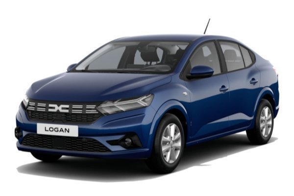

Dacia Logan
- 🔧 Moteur : 1.0L SCe, TCe ou ECO-G – jusqu'à 100 ch
- ⚡ 0–100 km/h : environ 11.5 secondes
- ⛽ Consommation : Øوالي 5.3 l/100km
- 📠Dimensions : 4.39m x 1.84m x 1.50m
- 🎛️ Équipements : Media Display 8", régulateur de vitesse, aide au stationnement, climatisation
- Our Models
Experience the Dacia Logan
Contact us today to book a test drive or learn more about this practical sedan.
Contact Us